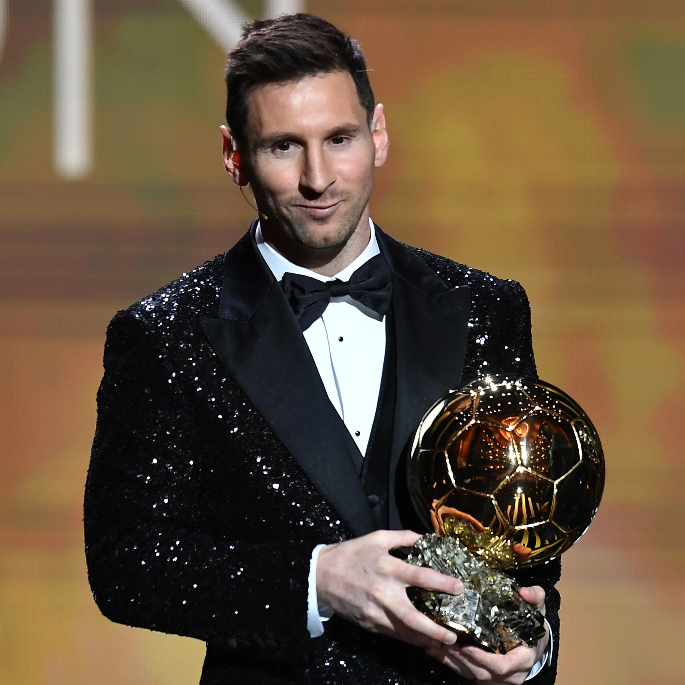

Conocido como Leo o "La Pulga", su inmensa calidad ya apuntaba cuando tenía cinco años y jugaba en el club de barrio de su ciudad natal dirigido por su padre, un empleado de la industria metalúrgica, y se reafirmó cuando, a partir de sus siete años, comenzó a jugar en las divisiones inferiores del Newell's Old Boys de Rosario.
A los 10 años, a punto de dar el salto al club River Plate de Buenos Aires, se le detectó un retraso en el desarrollo óseo causado por un bajo nivel de hormonas del crecimiento; el tratamiento médico era muy costoso, los clubes no quisieron afrontarlo y su padre, que no disponía de los recursos económicos necesarios, decidió entonces emigrar a Barcelona con su familia, donde se le había presentado una posibilidad laboral. En septiembre de 2000, Leo Messi realizaba una prueba en el F.C. Barcelona; el técnico Carles Rexach quedó maravillado con su talento futbolístico y, firmando en efecto un contrato en una servilleta de papel, como cuenta la anécdota, lo incorporó al club, que se hizo cargo del tratamiento del chico. Messi tenía entonces trece años y medía 1,40.
A partir de ese momento Messi se formaría en la Masia, centro de entrenamiento de la cantera azulgrana, donde pasó por las diferentes categorías (Infantil A, Cadete B, Cadete A, Juvenil A, Barça C y Barça B) antes de llegar al primer equipo, ya en la era del presidente Joan Laporta. Aunque participó en el amistoso que enfrentó al FC Barcelona con el FC Porto en el partido de inauguración del Estadio do Dragáo (16 de noviembre de 2003), su debut oficial en primera división con la camiseta azulgrana se produjo el 16 de octubre de 2004 en Montjuic, en el clásico derby con el Español de Barcelona.
Lo demás es historia reciente. A sus 17 años la Pulga marcaba su primer gol como profesional en el Barça en un partido contra el Albacete, y se convertía en el jugador más joven del equipo azulgrana en lograr un tanto en la Liga española. Durante esa temporada 2004-2005, las lesiones que arrastraban algunas figuras del primer equipo y su brillante trayectoria en el filial hicieron que fuese un habitual en las convocatorias y que contribuyera a la consecución del título de Liga, el primero de su palmarés.
Otro momento estelar en la biografía de Leo Messi fue su hazaña del 18 de abril de ese mismo año, en las semifinales de la Copa del Rey contra el Getafe, cuando eludió a cinco jugadores, portero incluido, e hizo el segundo gol de su equipo. Esta genialidad dio la vuelta al mundo y todos lo compararon con el Maradona que coronó el célebre "Gol del siglo" ante Inglaterra, en el Mundial de México de 1986. La progresión del jugador continuó en 2007-2008, una temporada difícil para el equipo, que vio cómo se agotaba el proyecto liderado por Ronaldinho y acababa la era de Frank Rijkaard en el banquillo.